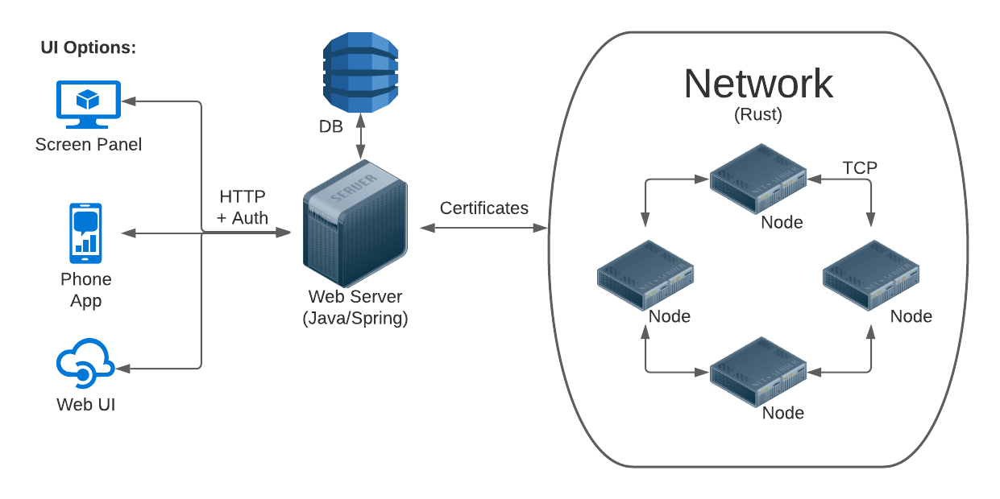
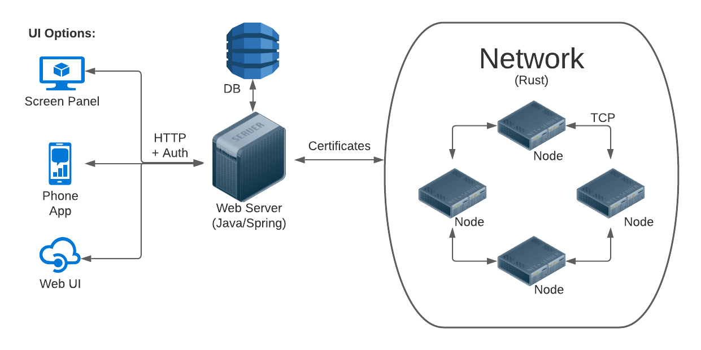

Soteria Documentation
Software
Overview
Soteria consists of three major components:
- the project website
- the sensor network
- the virtual reality demo
The sensor network is written in Rust, and can be located
in the poe-core
repository. It handles the communication of nodes with
each other, over TCP.
The project website is what you are currently viewing. It
serves multiple purposes: a way to promote and desrcibe
Soteria and as a primary repository for project documentation.
The source code can be located in the
poe-website
repository.
Please update it frequently, or at least at the
end of every semester.
The virtual reality demo is exactly that, a demo written
in Unity. The source
code is located in the
poe-vr
repository.
Since all projects use Git
for version control, we describe below how to best set
that up for all IPRO members.
Git Setup
Git is a version
control system that runs "locally"
on one's personal computer. GitHub is website
that hosts repositories "remotely" on their servers.
Together, they can be used to share/modify/download
code repositories in a way that facilitates collaboration.
There are many resources available for learning Git
for any new members, such as
ProGit.
-
Organization Access (POE GitHub Admin only)
Each of the aforementioned repositories already give
write access to the software team.
All you have to do is add your current semester's
members to that team and they should have access.
Convert any past students from Members
to Outside Collaborators. Once complete,
safely remove them from the Software Team mentioned below.
- Navigate to the
Organization
- Click on People
- Select all past semester IPRO members
- Click Convert to outside collaborator
To add/remove members:
- Navigate to the
Organization
- Click on Teams
- Click on Software
- On the left, click on the +
- Add any member(s) using their GitHub account
- Remove past members from this team
At this point, the current semester IPRO members ready
to set up Git/GitHub.
-
Git/GitHub Setup
Here is a quick guide to getting any or all
repositories set up on your system.
- Create a GitHub account.
-
Install Git on your local machine
-
Windows
- Install the Git Bash shell
-
Git should now be in your system.
Check by running
git --version in Bash or Powershell.
-
If using WSL (recommended),
see the Linux instructions below.
-
Linux/WSL
$ sudo apt install git
- Set user name and email
$ git config --global user.name YOUR_NAME$ git config --global user.name YOUR_GITHUB_EMAIL
-
Add an SSH key
-
Generate an SSH key:
$ ssh-keygen
-
Print public key to terminal and copy:
$ cat ~/.ssh/id_rsa.pub
Should look like: ssh-rsa AAAAB3NzaC1y...
-
Add it to GitHub
-
Go to GitHub
> Settings
> SSH and GPG keys
- Click on New SSH key
- Title can be anything (descriptive of your machine is best), paste key into Key section
-
Clone a repository
- Click the green Code dropdown
- (if you followed the SSH Key step) Click on SSH
- Copy by clicking the clipboard icon
$ git clone LINK_YOU_COPIED_HERE
You should now have access to any of the GitHub
repositories and have local copies on your
personal machine. You are ready to work!
See the below sections for more information on
each project, such as the current state and
future goals you can work on.
Website
The Soteria website has three primary pages
The Home page is where we present the
Problem statement and introduce Soteria.
This page is largely static as the goals
of the project remain unchanged. Work with the Marketing team
(if there is one) so that a consistent design/theme is kept
and the information listed is correct.
The People page is where past and present
members receive credit where it is due. There should be a catch-all
Past Contributors section for non-current
IPRO members. The current members should be listed under
their appropriate subteams above. This project has passed
many hands, and even you will end up on the list of contributors
who made Soteria possible.
At the start of the semester, you should move the previous
semester's members down to the Past Contributors
section, and add yourselves.
The Demo page is where the virtual reality
subteam gets to showcase their hard work. The VR demo is a
proof of concept that will allow new people to understand
what Soteria will be capable of.
The Wiki page is ideally the culmination of
all project documentation. At the time of this website's inception,
the project documents lie in a Google Drive which can be unwieldy.
Though it takes some effort to add information and figures here,
it is worth it for easier access. Anybody reading this is
already gaining from it by reading the above steps to set up
development workflows.
Since the website is largely static, we do not use a backend
such as PHP or Node/Express.js. We do use
Bootstrap v5.0 and
its associated classes and JavaScript. There are four HTML
files: index.html, people.html,
demo.html, and wiki.html. These
have their respective CSS files, while site-wide styling is
located in styles.css.
You are allowed to make any changes you want, Soteria is in
your hands after all. But we urge you to collaborate with
each other and keep future students in mind. As long as you
stay consistent with details that span the entire site
(color scheme, fonts, layout, etc.,), then the website will
only improve.
Core Codebase
The core codebase refers to the software portion of the actual
network of sensors that make up Soteria. Put simply, Soteria
consists of sensors/nodes scattered throughout a building.
These nodes communicate with each other in case of an emergency,
and will intelligently route building inhabitants to safety.
You can conceptually divide this core code base into three
components:
-
the front-end user interface
(poe-crust)
-
the back-end web server
(poe-mantle)
-
the underlying node network
(poe-core)
Below is an architecture diagram to help visualize this:

You will want to clone all three repositories (see Git instructions)
above
-
Setting up the Java Spring server to run locally
-
Install Java JDK 1.11 or higher
-
Windows/Mac Instructions
-
You can get it from the
Oracle Site.
Make sure you get the 64-bit one for a 64-bit OS.
-
After installing, make sure Java is in your system's "PATH" environment variable.
-
Linux (Ubuntu) Instructions
-
At your terminal, enter “sudo apt install default-jre” in your terminal
-
At your terminal, enter “sudo apt install default-jdk” in your terminal
-
Make sure java is in your path by entering
“echo $JAVA_HOME” in your terminal and verifying the output.
-
Install any IDE. We use VSCode here.
-
Install VSCode extensions
-
Spring Boot Extension Pack by Pivotal
-
Java Extension Pack by Microsoft
-
Maven (should come with Java)
Enter “mvn -v” in your terminal to verify it is installed.
-
Clone the server repository
-
Open the repository in your IDE
-
In VSCode, find the “Spring Boot Dashboard” on the bottom left to run the project.
Alternatively, find the “Java Projects” tab on the bottom left of the screen,
and click "Run".
Virtual Reality
Hardware
Cybersecurity
Marketing
Software
Overview
Soteria consists of three major components:
- the project website
- the sensor network
- the virtual reality demo
The sensor network is written in Rust, and can be located in the poe-core repository. It handles the communication of nodes with each other, over TCP.
The project website is what you are currently viewing. It
serves multiple purposes: a way to promote and desrcibe
Soteria and as a primary repository for project documentation.
The source code can be located in the
poe-website
repository.
Please update it frequently, or at least at the
end of every semester.
The virtual reality demo is exactly that, a demo written in Unity. The source code is located in the poe-vr repository.
Since all projects use Git for version control, we describe below how to best set that up for all IPRO members.
Git Setup
Git is a version
control system that runs "locally"
on one's personal computer. GitHub is website
that hosts repositories "remotely" on their servers.
Together, they can be used to share/modify/download
code repositories in a way that facilitates collaboration.
There are many resources available for learning Git
for any new members, such as
ProGit.
-
Organization Access (POE GitHub Admin only)
Each of the aforementioned repositories already give write access to the software team. All you have to do is add your current semester's members to that team and they should have access.
Convert any past students from Members to Outside Collaborators. Once complete, safely remove them from the Software Team mentioned below.
- Navigate to the Organization
- Click on People
- Select all past semester IPRO members
- Click Convert to outside collaborator
To add/remove members:
- Navigate to the Organization
- Click on Teams
- Click on Software
- On the left, click on the +
- Add any member(s) using their GitHub account
- Remove past members from this team
At this point, the current semester IPRO members ready to set up Git/GitHub.
-
Git/GitHub Setup
Here is a quick guide to getting any or all repositories set up on your system.
- Create a GitHub account.
-
Install Git on your local machine
-
Windows
- Install the Git Bash shell
-
Git should now be in your system.
Check by running
git --versionin Bash or Powershell. - If using WSL (recommended), see the Linux instructions below.
-
Linux/WSL
$ sudo apt install git
-
Windows
- Set user name and email
$ git config --global user.name YOUR_NAME$ git config --global user.name YOUR_GITHUB_EMAIL
-
Add an SSH key
-
Generate an SSH key:
$ ssh-keygen -
Print public key to terminal and copy:
$ cat ~/.ssh/id_rsa.pub
Should look like:ssh-rsa AAAAB3NzaC1y... -
Add it to GitHub
- Go to GitHub > Settings > SSH and GPG keys
- Click on New SSH key
- Title can be anything (descriptive of your machine is best), paste key into Key section
-
Generate an SSH key:
-
Clone a repository
- Click the green Code dropdown
- (if you followed the SSH Key step) Click on SSH
- Copy by clicking the clipboard icon
$ git clone LINK_YOU_COPIED_HERE
You should now have access to any of the GitHub repositories and have local copies on your personal machine. You are ready to work!
See the below sections for more information on each project, such as the current state and future goals you can work on.
Website
The Soteria website has three primary pages
The Home page is where we present the Problem statement and introduce Soteria. This page is largely static as the goals of the project remain unchanged. Work with the Marketing team (if there is one) so that a consistent design/theme is kept and the information listed is correct.
The People page is where past and present members receive credit where it is due. There should be a catch-all Past Contributors section for non-current IPRO members. The current members should be listed under their appropriate subteams above. This project has passed many hands, and even you will end up on the list of contributors who made Soteria possible.
At the start of the semester, you should move the previous semester's members down to the Past Contributors section, and add yourselves.
The Demo page is where the virtual reality subteam gets to showcase their hard work. The VR demo is a proof of concept that will allow new people to understand what Soteria will be capable of.
The Wiki page is ideally the culmination of all project documentation. At the time of this website's inception, the project documents lie in a Google Drive which can be unwieldy. Though it takes some effort to add information and figures here, it is worth it for easier access. Anybody reading this is already gaining from it by reading the above steps to set up development workflows.
Since the website is largely static, we do not use a backend
such as PHP or Node/Express.js. We do use
Bootstrap v5.0 and
its associated classes and JavaScript. There are four HTML
files: index.html, people.html,
demo.html, and wiki.html. These
have their respective CSS files, while site-wide styling is
located in styles.css.
You are allowed to make any changes you want, Soteria is in your hands after all. But we urge you to collaborate with each other and keep future students in mind. As long as you stay consistent with details that span the entire site (color scheme, fonts, layout, etc.,), then the website will only improve.
Core Codebase
The core codebase refers to the software portion of the actual network of sensors that make up Soteria. Put simply, Soteria consists of sensors/nodes scattered throughout a building. These nodes communicate with each other in case of an emergency, and will intelligently route building inhabitants to safety.
You can conceptually divide this core code base into three components:
- the front-end user interface (poe-crust)
- the back-end web server (poe-mantle)
- the underlying node network (poe-core)
Below is an architecture diagram to help visualize this:
You will want to clone all three repositories (see Git instructions) above
-
Setting up the Java Spring server to run locally
-
Install Java JDK 1.11 or higher
-
Windows/Mac Instructions
- You can get it from the Oracle Site. Make sure you get the 64-bit one for a 64-bit OS.
- After installing, make sure Java is in your system's "PATH" environment variable.
-
Linux (Ubuntu) Instructions
- At your terminal, enter “sudo apt install default-jre” in your terminal
- At your terminal, enter “sudo apt install default-jdk” in your terminal
- Make sure java is in your path by entering “echo $JAVA_HOME” in your terminal and verifying the output.
-
Windows/Mac Instructions
- Install any IDE. We use VSCode here.
-
Install VSCode extensions
- Spring Boot Extension Pack by Pivotal
- Java Extension Pack by Microsoft
-
Maven (should come with Java)
Enter “mvn -v” in your terminal to verify it is installed.
- Clone the server repository
- Open the repository in your IDE
- In VSCode, find the “Spring Boot Dashboard” on the bottom left to run the project. Alternatively, find the “Java Projects” tab on the bottom left of the screen, and click "Run".
-
Install Java JDK 1.11 or higher